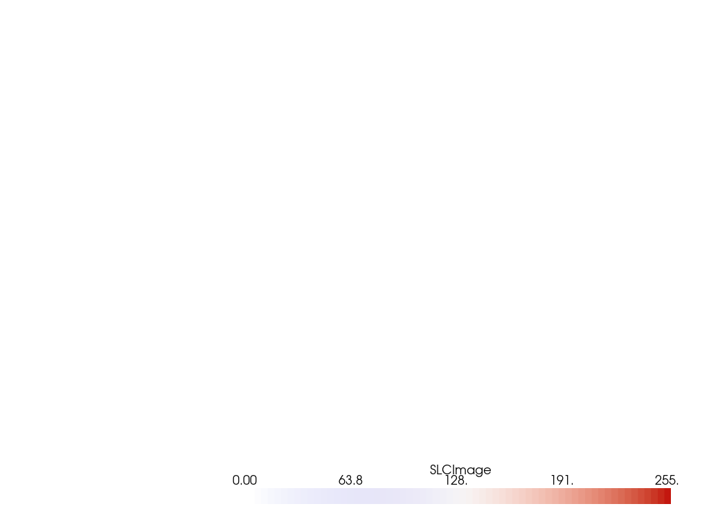

add_volume#
- Plotter.add_volume(volume, scalars=None, clim=None, resolution=None, opacity='linear', n_colors=256, cmap=None, flip_scalars=False, reset_camera=None, name=None, ambient=0.0, categories=False, culling=False, multi_colors=False, blending='composite', mapper=None, scalar_bar_args=None, show_scalar_bar=None, annotations=None, pickable=True, preference='point', opacity_unit_distance=None, shade=False, diffuse=0.7, specular=0.2, specular_power=10.0, render=True, **kwargs)#
ボリュームを追加し，デフォルトではスマートマッパーを使用してレンダーします．
3 D
numpy.ndarrayまたはpyvista.UniformGridが必要です．- パラメータ
- volume : 3D
numpy.ndarrayかpyvista.UniformGrid3Dnumpy.ndarrayorpyvista.UniformGrid 表示する入力ボリューム．3 Dの数値配列を使用できます．
- scalars :
strかnumpy.ndarray,optionalstrornumpy.ndarray,optional メッシュの "色" に使用されるスカラー．メッシュ上に存在する配列の文字列名，またはメッシュ内のセル数またはポイント数と等しい配列を受け入れます．配列は単一のベクトルとしてサイズを設定する必要があります．
scalarsがNoneの場合，アクティブスカラーが使用されます．- clim2
itemlist,optional スカラーのカラーバーの範囲．デフォルトはスカラー配列の最小値と最大値です．例:
[-1, 2]．rngもこの別名として認められています．- resolution
list,optional ブロックの解像度
- opacity
strornumpy.ndarray,optional スカラー配列の不透明度マッピング．文字列を指定して，スカラ範囲を定義済みの不透明度転送関数(オプションには， 'linear' ， 'linear_r'， 'geom' ， 'geom_r' があります．)にマッピングすることもできます．あるいは，長さが
n_colors以下の配列であるカスタムメイドの伝達関数を渡すこともできます．- n_colors
int,optional スカラーを表示するときに使用するカラーの数．デフォルトは256です．スカラーバーにもこの数の色があります．
- cmap
str,optional scalarsをマップする際のMatplotlibカラーマップの名前．利用可能なMatplotlibカラーマップを参照してください．scalarsを表示する場合にのみ適用されます．Matplotlibがインストールされている必要があります．colormapは，このエイリアスとしても使用できます．colorcetまたはcmoceanがインストールされている場合は，それらのカラーマップを名前で指定できます．- flip_scalarsbool,
optional cmapの方向を反転します．ほとんどのカラーマップでは，
*_rサフィックスも同様にこれを行うことができます．- reset_camerabool,
optional このメッシュをシーンに追加した後，カメラをリセットします．
- name
str,optional 簡単に更新できるように，追加したアクターの名前．この名前のアクターがレンダリングウィンドウに既に存在する場合は，新しいアクターに置き換えられます．
- ambient
float,optional 照明が有効な場合，これは，ビューアから放射された光源に向けられていないときにアクターに到達する0から1の光の量です．デフォルトは0.0です．
- categoriesbool,
optional Trueに設定すると，スカラー配列内の一意の値の数がn_colors引数として使用されます．- culling
str,optional 選択された面はレンダリングされません．オプションは
'front'または'back'です．これは，高密度のサーフェイスメッシュ，特にエッジが表示されている場合に便利ですが，フラットメッシュが部分的に表示されることがあります．デフォルトはFalseです．- multi_colorsbool,
optional マルチブロックオブジェクトを印刷するときに複数の色を使用するかどうかを指定します．ブロックは 'Reds' ， 'Greens' ， 'Blues' ， 'Grays' の順に色付けされます．
- blending
str,optional 入力オブジェクト()を表示するための描画モード． 'additive' ， 'maximum' ， 'minimum' ， 'composite' ， 'average' のいずれかです．デフォルトは 'additive' です．
- mapper
str,optional 使用するボリュームマッパーは名前で指定します．オプションには，
'fixed_point'，'gpu'，'open_gl'，'smart'があります．Noneの場合，self._themeの"volume_mapper"が使用されます．- scalar_bar_args
dict,optional スカラーバーをシーンに追加するときに渡すキーワード引数のディクショナリ．オプションについては
pyvista.BasePlotter.add_scalar_bar()を参照してください．- show_scalar_barbool
Falseの場合，スカラーバーはシーンに追加されません．デフォルトはTrueです．- annotations
dict,optional 注釈の辞書を渡します．キーはスカラー範囲のfloat値で，スカラーバーに注釈を付けます．値は文字列注釈です．
- pickablebool,
optional このメッシュを選択可能にするかどうかを設定します．
- preference
str,optional mesh.n_points == mesh.n_cellsでスカラを設定した場合，このパラメータはスカラがどのようにメッシュにマッピングされるかを設定します． デフォルトの'points'では，スカラーはメッシュのポイントに関連付けられます． これは'points'または'cell'のいずれかです．- opacity_unit_distance
float スカラー不透明度転送関数が定義される単位距離を設定/取得します．つまり，指定した距離にわたって，特定の不透明度(伝達関数から)が累積されます．これは，レンダリング中の実際のサンプリング距離に合わせて調整されます．既定では，体積の境界ボックスの対角線の長さを寸法で割った値です．
- shadebool
デフォルトはオフです．シェーディングがオンの場合，マッパはシェーディング計算を実行できます - 場合によっては，シェーディングが適用されない(例えば，最大強度投影)ため，このフラグをオンにしてもシェーディングは実行されません．
- diffuse
float,optional 拡散照明係数．デフォルト
1.0．- specular
float,optional 鏡面反射光の係数．デフォルト
0.0．- specular_power
float,optional 鏡面パワー．
0.0から128.0．- renderbool,
optional Trueの場合，強制的にレンダリングします．デフォルトは
True．- **kwargs
dict,optional オプションのキーワード引数．
- volume : 3D
- 戻り値
vtk.vtkActor体積のVTKアクター．
例
クールウォームのカラーマップを使って，内蔵されたボリュームの例を示します．
>>> from pyvista import examples >>> import pyvista as pv >>> bolt_nut = examples.download_bolt_nut() >>> pl = pv.Plotter() >>> _ = pl.add_volume(bolt_nut, cmap="coolwarm") >>> pl.show()
